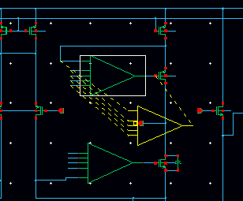
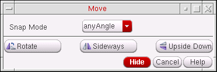
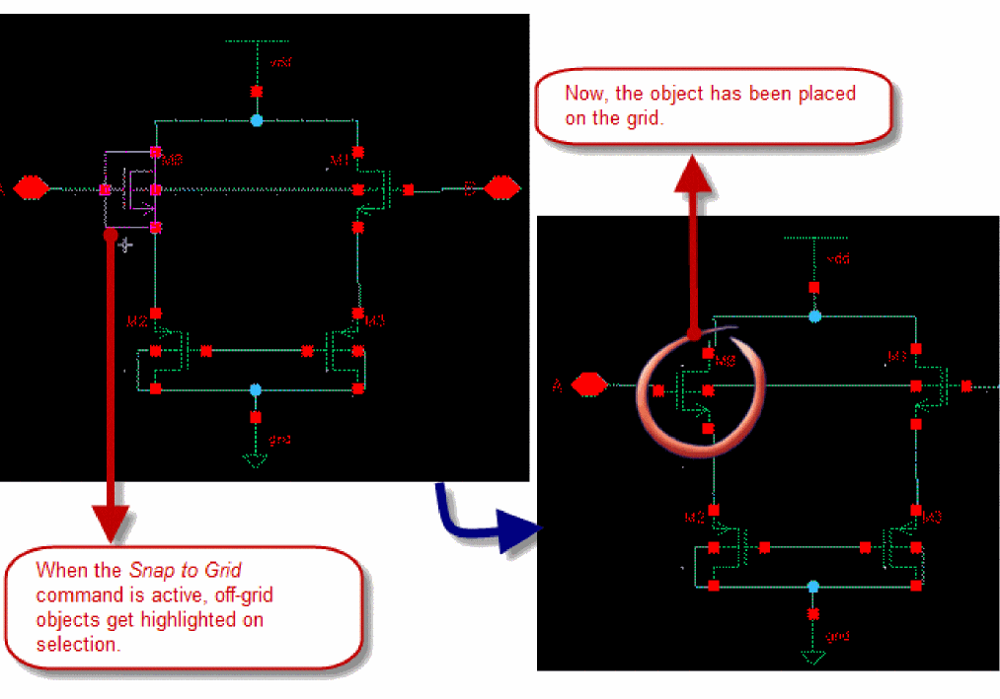
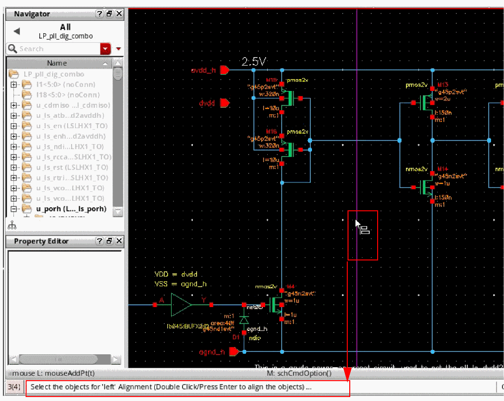

7
Editing Objects
This chapter discusses commands such as Copy, Move, Stretch, and Delete. The next chapter discusses Edit Properties commands.
- Using Direct Manipulation
- Undoing and Redoing an Edit
- Stretching
- Copying
- Moving
- Snapping to Grid
- Ignoring Instances
- Deleting
- Rotating
- Aligning
- Distributing
- Discarding Edits
- Alternating Symbol Views
- Toggling Objects
- Updating Pins Across Cellviews
- Annotating Data on the Schematic Window
Using Direct Manipulation
Direction manipulation is one of the quickest ways to edit an object. You use the mouse, rather than commands, to edit.
To directly manipulate an object,
- Place the pointer over an object or shape.
- Hold down the mouse button and the appropriate key to copy, move, stretch, or create an object.
- Drag the mouse to complete the desired action.
You can use direct manipulation to do the following tasks:
Direct Manipulation Operations
The following table lists operations you can perform using direct manipulation.
| Object Type | Drag | Shift-Drag | Control-Drag |
|---|---|---|---|
Turning Off Direct Manipulation
To turn off direct manipulation,
-
Open the
schBindKeys.ilfile located in the your_install_dir/tools/dfII/samples/localdirectory. -
Comment out
(1),(2), and(3).
These three bindkeys are keyed to the three mouse buttons for direct manipulation. -
Load the current session or add the Load command to the
.cdsinitfile for future sessions.
Undoing and Redoing an Edit
-
Choose Edit – Undo.
This command reverses the action of the previous edit command. You can undo, one at a time, the last 10 levels of edit commands. Commands that cause data to be saved to disk cannot be undone. You can set the undo limit using the Options – User Preferences command from the Command Interpreter Window (CIW).
To cancel the previous undo commands,
Undo/Redo using DFII on OpenAccess
- DFII on OpenAccess supports the undo/redo of changes to parameterized cell parameters on instances, including stretchable Pcells.
- DFII on OpenAccess allows undoing changes made to the design only before saving it.
- DFII on OpenAccess supports 128 undo levels, where zero turns off the undo mechanism, and 128 turns on the undo mechanism for up to 128 levels of undo.
- DFII on OpenAccess prompts you to save only if the cellview has been changed.
-
In DFII on OpenAccess, when all the changes to a cellview are undoable and have been undone, the
dbIsCellViewModifiedfunction returnsFALSEand the cellview attributemodifiedButNotSavedreturnsnilwhen queried withcv~>modifiedButNotSaved. - DFII on OpenAccess does not add checkpoints for failed edits to the undo stack.
-
Undo/redo for DFII on OpenAccess is unavailable after running either of the Save commands, File – Save or File – Check and Save, unless the environment variable dbUndoAcrossSave is set to
t.
Changing the Undo Limit
-
From the CIW, choose Options – User Preferences.
The User Preferences form appears.
-
Move the Undo Limit slider to the limit you want.In OpenAccess, the Undo Limit option is a drop-down box with two values, 0 and 128. You can undo the last 128 levels of edit commands. However, if dbUndoAcrossSave is set to the default
nil, the undo stack is reset each time the Save commands, File – Check and Save or File – Save are run. - Click OK.
Stretching
Use the Stretch command to reposition the placement of objects in your design without losing connectivity between wires and pins.
- Stretching works most effectively when infix mode is turned on.
- Direct manipulation is the easiest and fastest way to stretch objects or shapes.
- The Stretch command does not stretch objects from one cellview to another.
- Use extended selection to select an object (such as an instance, pin, or block) and associated wires so you can stretch them all at once.
The Stretch command operates differently in the schematic editor and the symbol editor.
In the schematic editor, Stretch
-
Stretches selected objects and maintains connectivity by rerouting wires when necessary
The Stretch command supports partially selected wire vertexes. The remaining nonselected vertexes are anchored in place. - Moves wires while maintaining connectivity with the object attached to the wire
- Moves a pin while maintaining connectivity with the wire that is attached to the pin
-
Stretches an entire shape
Shapes move independently of one another. They do not need to maintain connectivity. - Stretches a partial shape (an edge or a vertex of a shape or an endpoint of a line)
Stretching with Bindkeys
To stretch an object using bindkeys,
Stretching in the Schematic Window
To stretch an object while in the schematic window,
- Choose Edit – Stretch.
-
Select the object you want to stretch.
The point used to select the object becomes the reference point. - Point at a reference point.
- Move the mouse, then click a destination for the stretch.
To change Stretch command options,
-
Press
F3.
The Stretch – Schematic View form appears.
The selected objects are moved rather than stretched in the following cases:
- Snap Mode restricts the direction of any move that a selected object is to make.
- Route Method specifies how the wires are to rerouted.
- Reroute Wire Segments Connected To specifies which wire segments will be rerouted with regards to the type of selected object that they are currently connected to (for more information see Using the Reroute Wire Segments Connected To Option).
Using the Reroute Wire Segments Connected To Option
The Reroute Wire Segments Connected To option, in the Stretch form, can be used with instances, pins, and/or wires.
When an instance, pin, or wire is selected in the design canvas, the Reroute Wire Segments Connected To option will determine (dependent upon the appropriate options being checked or unchecked) which wire segments are to be rerouted.
Rerouting Instances
-
When the instance option is not checked, only those wire segments that are directly connected to the selected instance will be rerouted (as shown in Figure 7-1).
Figure 7-1 Instance option unchecked so only directly connected wire segments will be rerouted -
When the instance option is checked, all wire segments between the selected instance and the next solder dot, instance, or pin, will be rerouted (as shown in Figure 7-2).
Figure 7-2 Instance option checked so all connected wire segments will be rerouted
Rerouting Pins
-
When the pin option is not checked, only the wire segment that is directly connected to the selected pin will be rerouted (as shown in Figure 7-3).
Figure 7-3 Pin option unchecked so only the wire segment directly connected to the pin will be rerouted -
When the pin option is checked, all wire segments between the selected pin and the next solder dot, instance, or pin, will be rerouted (as shown in Figure 7-4).
Figure 7-4 Pin option checked so all connected wire segments will be rerouted
Rerouting Wires
-
When the wire option is not checked, only the wire segments that are directly connected to the selected wire will be rerouted (as shown in Figure 7-5).
Figure 7-5 Wire option unchecked so only wire segment directly connected will be rerouted -
When the wire option is checked, all wire segments connected between the selected wire and the next solder dot, instance, or pin, will be rerouted (as shown in Figure 7-4).
Figure 7-6 Wire option checked so all wire segments will be rerouted
Stretching an Instance
The following diagram shows how to stretch an instance using the default settings (Route Method: full, Snap Mode: anyAngle).
-
On the Stretch form, turn on Reroute Wire Segments Connected To Instance.
The following diagram illustrates stretching an instance named I1.
When you set Reroute Wire Segments Connected To Instance to off, the rubberband lines begin at the wire (a).
When you set Reroute Wire Segments Connected To Instance to on, the rubberband lines begin at the pin (b).
Stretching a Wire
The following diagram shows how to stretch a wire using the default settings.
You can stretch a wire in any direction. The wire is rerouted and connectivity is maintained. When you stretch a wire, all wire segments that are connected to another object (such as a pin) stretch.
Stretching Using Route Method Simple
Route method simple is one of three routing methods available from the Stretch form by selecting Edit – Stretch.
For more information on the options in this form see Stretch – Schematic View.
Setting Route Method to simple means that only those wires that are connected to instances, and that are also aligned with the stretch direction, will get re-routed when the instance is stretched. Routing will only be attempted along a single horizontal or vertical line.
Stretch Mode Simple Examples
When using the simple routing method, you should be aware of how the simple algorithm can operate and what potential “side effects” could occur.
-
Stretch example 1:
If you stretchA1to the right so that pinyjust touches the left end of wirexyz, this will result in the instance pinybeing auto-connected to wirexyz. -
Stretch example 2:
The examples below attempt to illustrate what would occur if you tried to stretch instancemn3to the left of wireabc.
The right end of the wire is known as the anchor point (this will be referred to asPa)since it would remain in its original position.
When you selectmn3, stretch it to its left, and then place it such that its instance pinyis still to the right ofPa, the wireabcwill be re-routed betweenPaand instance terminala. This is illustrated below:
 If you made an attempt to stretch instance
If you made an attempt to stretch instancemn3to the left so that instance pinyis also to the left ofPa, then the router, while re-routing wireabcbetween instance pinaand pointPa, will uncover that the yet to be created wire would be intercepted by instance terminaly. In this situation, a failure will occur and a flight wire would be created instead. If you performed the same stretch using the full route method, the router would route the wire from pinato the pointPaby creating a wire loop around the instance. However, when attempting this in simple mode, the router will not do this.
When using the Stretch command care should be taken so that you do not inadvertently cause the circuit topology to be altered. For example, a previously unconnected pin could be moved on top of a wire causing a connection to be made.
The example below describes an instance being moved in such a manner. The unconnected pin is dropped onto a net which is already connecting instance pins.
This behavior can cause shorts in your design.
Copying
Use the Copy command to clone an object in your design.
- Copies objects in the same cellview or another cellview
- Copies arrays of objects
- Rotates an object or turns it upside down or sideways
- Works best when infix mode is turned on
- Works differently when pre- and postselecting an object before copying it
- Works easiest and fastest using direct manipulation.
Copying Single Objects
- From the view, choose Edit – Copy.
- Select the object you want to copy.
- Click a destination for the copy.
-
To change Copy command options, press
F3.
The Copy form appears.

Copying Arrays of Objects
- From the view, choose Edit – Copy.
-
Select the object you want to copy as an array.
The Copy form appears. If the form does not appear, pressF3.
- Fill in the number of rows and columns for your array.
- Click multiple points to create the array.
- Select Include Design Intent if the design intent associated with the object is also to be included in the copy.
Copying Across Cellviews
You can copy objects from one cellview to another. Copied objects remain attached to the cursor when you move the cursor into another window containing a schematic or symbol cellview. You can copy data from a read-only schematic to a schematic opened for edit.
To copy an object from one cellview to another,
-
From the view, select the object to copy.
If Infix is off, you are prompted to first click a reference point for the copy. - Choose Edit – Copy.
- Move the cursor to the destination cellview.
- Click a location in the cellview for the copy.
Copying with Direct Manipulation
Direct manipulation is one of the quickest ways to copy an object.
To copy an object using direct manipulation,
When you release the mouse button, the original object is copied and placed.
Copying with Bindkeys
To copy an object using bindkeys,
Copying Wires and Wire Names
When you copy a wire, any attached wire names are also copied with the wire. To disable this, deselect the wire name option in the Schematic Selection Filter form.
Moving
Use the Move command to reposition objects in your design. Unlike the Stretch command, the Move command does not maintain connectivity of the selected objects. The Move command:
- Moves an object without maintaining connectivity
- Rotates an object or turns it upside down or sideways
- Works best when infix mode is turned on
- Works differently when pre- and postselecting an object before moving it
- Works easiest and fastest using direct manipulation
-
Moves selected objects between different schematic cellviews
You cannot move partially selected objects to a different cellview. - When you work with wires, note shapes, or device shapes (rectangles, polygons, circles, ellipses, and arcs), you can select a vertex, set of vertexes, or edges; when you work with partially selected objects, only the selected vertexes move while the other vertexes or edges are anchored in place.
Moving Objects
- From the view, choose Edit – Move.
- Select an object you want to move.
-
Click a destination for the object.
To change Move command options,
-
Press
F3.
The Move form appears.

After a move, all connectivity breaks between the selected object and the objects to which it was connected.
If you want to maintain connectivity, use the
Moving with Direct Manipulation
Direct manipulation is one of the quickest ways to move an object.
To move an object using direct manipulation,
- From the view, place the pointer over an object.
-
Press the
Controlkey, and click and drag the mouse.
You are now in the Move command. When you release the mouse button, the object is placed.
Moving with Bindkeys
To move an object using bindkeys,
Snapping to Grid
While dragging the mouse on the schematic canvas to select various objects, such as nets, labels, instances, instTerms, pins, and so on, the mouse action fails to select those objects. This happens because the objects are not on the grid as per the current snap spacing setting.
To place the off-grid objects on the given grid, select those objects on the schematic or symbol and click the Edit – Align – Snap to Grid command.
To view the current snap spacing setting, click Options – Display.
Mouse might also fail to select the objects if the schematic was created with one snap spacing setting and opened with a different snap spacing. Here is an example to show how the schematic view changes when the Snap To Grid command is applied.
Snapping Pre-Selected Objects to Grid
To snap the selected objects to a grid:
Snapping Post-Selected Objects to Grid
To snap objects to a grid after enabling the Snap to Grid command:
-
Click Edit – Align – Snap to Grid.
The cursor changes to snap to grid mode ( )and the status bar displays the prompt to select objects.
-
Select the objects in the schematic or symbol view. On selection, the off-grid objects get highlighted as shown below.
 -
Double-click or press
Enterto snap the selected objects to the grid.
Limitations
The limitation of this functionality is that design objects, such as wires, pins, or instances, might overlap or routing and connectivity might break while changing the snap spacing setting. Therefore, to address such issues, you need to fix the design manually.
Example
Consider a scenario where the existing snap spacing is 0.0001 units. Therefore, three wires have been placed vertically equidistant at 1 snapSpacing = (0.0001 units) from each other as shown below.
Now, specify the new snapSpacing setting as 0.0625 units.
While snapping, all the wires being on the left half of the snapping grid coincide with the leftmost wire as shown below.
Snapping Instances to Grid Using SKILL Functions
You can use following SKILL functions to snap instances to a grid in the schematic:
Deleting
When you use the Delete command, keep in mind the following:
- You can select an object before you use the Delete command (preselection). When you preselect objects, the Delete command ends after the selected objects are deleted.
-
You can select an object after you use the Delete command (postselection). When you postselect objects, press the
Esckey to end the Delete command unless you want to delete another object. To be sure the Delete command is no longer active, check the prompt line at the bottom of the window in which the cellview is displayed. - You can recover an object that you deleted by mistake by choosing the Edit – Undo command.
- You can delete an instance and the wires that connect to it by using extended selection with the Delete command.
You cannot use the Delete command to delete
-
Sheet borders
To remove sheet borders, use the Edit – Sheet Size command. -
Selected visible properties
To delete properties, use the Edit – Properties command.
Deleting Preselected Objects
If you prefer to select an object before you delete it,
- From the view, click the objects you want to delete.
-
Choose Edit – Delete.
The system removes the objects from your design.
You can also delete objects by pressing the Delete key.
Deleting Postselected Objects
If you prefer to use the Delete command first and then select the object you want to delete,
You can also delete objects by pressing the Delete key.
Deleting Sheet Borders
To delete the sheet border from a schematic sheet,
-
From the schematic window, choose Edit – Sheet Size.
The Change Sheet Border Size form appears.
-
Set the Border Type to
none. - Click OK.
Ignoring Instances
Select the instances on the schematic and choose Edit – Ignore Instances. It is used for ignoring, that is, adding ignore properties to the selected instance and removing ignore properties from the selected instance. Therefore, this command is used to toggle the ignored status of the given instance.
To view the registered and enabled ignore properties, use the Ignore Properties tab of the Editor Options form, which is displayed when you choose Options – Editor. You can also select or deselect the check boxes to enable or disable the ignore properties for an instance.
Alternatively, to ignore a selected instance, right-click the instance and choose Ignore as shown below. This menu item also works as a toggle switch to change the status of an instance if it was previously ignored.
The ignored instances appear with a red cross mark drawn over them in the schematic. The cross mark that appears on the ignored instances has three states based on the ignore properties selected in the Editor Options form:
- No cross: None of the enabled ignore properties are found on the instance.
-
Solid cross: All of the properties that are selected in the UI are also found on the instance, as shown below.
-
Semi-transparent cross- Only few enabled ignore properties in the UI are found on the instance.
The View –– Ignored Instances menu item displays all ignored instances in the schematic.
Ignoring Pre-Selected Instances
To ignore instances using the ignore option:
Ignoring Post-Selected Instances
-
Select Ignore Instances in the Edit menu.
The cursor changes to ignore instance mode and the status bar displays the prompt to select instances for ignoring.
- Select the instance(s).
-
Double-click or press
Enterkey to ignore the selected instances.
Ignoring Instances Using SKILL Functions
You can use following SKILL functions to ignore instances in the schematic:
- schHiIgnore
- schIgnore
- schRemoveIgnoreProp
- schGetAllIgnoreProps
- schAddIgnoreProp
- schFindIgnorePropByName
- schSetIgnorePropEnabled
- schGetIgnoredStatus
Rotating
The Edit – Rotate command rotates or flips objects
- Rotate Right turns objects 90 degrees clockwise.
- Rotate Left turns objects 90 degrees counter-clockwise.
- Flip Horizontal flips objects from side to side.
- Flip Vertical flips objects from top to bottom.
Rotating Using the Edit Toolbar
In addition to the Edit – Rotate option in the menu bar, you can access the rotation functions from the Edit toolbar.
To rotate an object using the rotate options on the Edit toolbar:
-
Select the rotation option that you want to use from the Edit toolbar.
Your cursor will change to be in object rotation mode, and the status bar will prompt you to Point at reference point for rotate. -
Click the object that you want to rotate or flip.
The object will rotate as required. - Repeat as required (for Rotate Right and Rotate Left).
Rotating Preselected Objects
To rotate a preselected object,
- From the view, click the object you want to rotate.
- Choose Edit – Rotate.
-
Point at a reference point in the design and click.
The selected object rotates and the command terminates.
If you want to change how the software rotates objects,
-
From the view, choose Edit – Rotate.
The Rotate form appears. If the form does not appear, pressF3.

- Change the option setting.
Rotating Postselected Objects
To rotate a postselected object,
If you want to change how the software rotates objects,
-
From the view, choose Edit – Rotate.
The Rotate form appears. If the form does not appear, pressF3.
- Change the option setting.
Rotating with Direct Manipulation
To rotate objects while in the Move, Copy, Stretch, Create – Instance, Create – Pin, Create – Wire, Create – Note Text, or Create – Label command,
Rotating with Bindkeys
To rotate or mirror (flip horizontally or sideways) an object while in the Move, Copy, Stretch, Create – Instance, Create – Pin, Create – Wire, Create – Note Text, or Create – Label command,
- From the view, select an object.
-
Press one of the following:
r, to rotate 90 degrees counterclockwise
Shift-r, to flip horizontally/rotate sideways
Control-r, to flip vertically/rotate upside down
Aligning
The Edit – Align command aligns the selected objects in one of the following directions: right, left, bottom, top, horizontal, or vertical.
Aligning Using the Edit Toolbar
Alternatively, you can access the align options from the Edit toolbar.
Aligning Pre-Selected Objects
To align pre-selected objects:
- Select the objects in the schematic or symbol view.
-
Click the align option that you want to use from the Edit toolbar to get the objects aligned.
Align Left aligns all the selected objects vertically with the left-most edge of the object selection area.
Align Vertical aligns the selected objects vertically with the reference axis on the schematic canvas, as shown below.
Align Right aligns all the selected objects vertically with the right-most object selected on the schematic canvas.
Align Top aligns all the selected objects horizontally with the top-most object selected on the schematic canvas.
Align Horizontal aligns the selected objects horizontally with the reference axis on the schematic canvas, as shown below.
Align Bottom aligns all the selected objects horizontally with the bottom-most object selected on the schematic canvas.
Aligning Post-Selected Objects
To align post-selected objects:
-
Select the align option that you want to use from the Edit toolbar.
The cursor changes to object alignment mode and the status bar displays the prompt to select the reference point for alignment in the specified direction.
-
Select the reference point for alignment.
The reference axis is displayed on the canvas according to the alignment direction, and the status bar displays the prompt to select objects for alignment in the specified direction.
 - Select the objects that you want to align.
-
Double-click or press the Enter key to align the objects in the required direction.
Aligning Using SKILL Functions
You can use the following SKILL functions to align objects in the schematic:
Distributing
The Edit – Distribute command arranges the selected objects at equal distance, vertically or horizontally.
-
Distribute Vertical distributes the objects vertically along the reference box, as shown below.
- Distribute Horizontal distributes the objects horizontally.
Distributing Using the Edit Toolbar
Alternatively, you can access the distribute options from the Edit toolbar.
Distributing Pre-Selected Objects
To arrange pre-selected objects:
- Select the objects in the schematic or symbol view.
- Click the distribute option that you want to use from the Edit toolbar to place the objects at equal distance.
Distributing Post-Selected Objects
To arrange post-selected objects
-
Select the distribute option that you want to use from the Edit toolbar.
The cursor changes to object distribution mode and the status bar displays the prompt to select objects for distribution in the specified direction.
-
Select the objects to be distributed.
The reference rectangle is displayed on the canvas to encompassing all the selected objects. -
Double-click or press the
Enterkey to distribute the objects in the specified direction.
Distributing Using SKILL Functions
You can use the following SKILL functions to align objects in the schematic:
Discarding Edits
To discard edits you made since the last save,
-
From the view, choose File – Discard Edits.
The Discard Edits dialog box appears. -
Click Yes or No.
If you click Yes, the edits are discarded and the last version saved appears. If you click No, the edits are retained.
Alternating Symbol Views
When you create a schematic, you might find it convenient for a particular library cell to have more than one symbol representation. These different symbols might represent deMorgan equivalents or adhere to different drafting standards.
Use the Edit – Alternate View command to switch between the different symbol representations.
Changing the View of a Preselected Object
To change symbol views for a preselected object,
Changing the View of a Postselected Object
To view symbol views for a postselected object,
- From the schematic window, choose Edit – Alternate View.
-
Click an object in the schematic.
Continue clicking on the object to view all the alternative views. After displaying the last view, the command redisplays the first view.
Toggling Objects
Use bindkeys to toggle an object while in the Create – Pin or Create – Wire command.
Toggling Pin Direction Options
To toggle the direction of a pin (for example, from input to inputOutput),
- From the view, choose Create – Pin.
-
Press the
Shiftkey and click right to cycle through the options.

Toggling Wire Draw Mode Options
When you add a wire to your design, the wire segment is drawn using a draw mode that you specify on the Add Wire form. Use your mouse to cycle through the possible draw modes (shown below) to specify another mode.
- From the schematic window, choose Create – Wire.
-
Use the right mouse button to toggle through the draw modes.
The wire will change form as you change the draw mode. - Click to indicate the first data point of the wire.
- Move the cursor to the second point of the wire and click right.
Toggling Instance Symbol View Options
To toggle instance symbol views (for example, from a nand2 symbol view to a nand2 symbolNeg view),
- From the schematic window, choose Create – Instance.
-
Press the
Shiftkey and click right to cycle through the options.
Updating Pins Across Cellviews
Use this form to update a schematic or symbol pin to match those in another view of the same cell. It is accessed using the Edit – Update Pins From View command.
- From a schematic view, choose File – Open Symbol to open the corresponding symbol view.
-
Edit the symbol as required. For example, rename a pin from
BtoC. -
Return to the schematic view and select Edit – Update Pins From View.
This will display the Update Pins form.

-
Select from the Update from view option the view from which you want to update the current view.
A default selection is automatically selected appropriate for the current cellview.
Note: The scrollable text area of the form displays the available updates from the selected view, in this example, theschematicview.
The updates that can be required to be made are: -
Click OK to update the pin status of the current cellview.
Depending on what changes are to be made, the following updates will be performed:- If there are pins to be added, the Add Pin form is invoked (select F3 to display and update the form if it is currently hidden). The Pin Names and Direction fields are automatically populated and you are prompted, at the status bar, to place the additional pins appropriately in the current cellview.
- Any pins to be deleted are automatically removed.
- Any pin direction changes required are automatically done.
You should check the CIW to confirm any additions, deletions, and changes made.
Annotating Data on the Schematic Window
You can annotate data onto the schematic to show the parameters, operating points, net names, currents and voltages of the design components. You can also change the existing annotations using the context menu or the Annotation Setup form. When you change the annotation settings for a design, the annotated data is updated at all levels of hierarchy in the design. You can configure the annotation data for editable as well as read only designs and the annotations of two separate designs are independent of each other even if there are common elements between them. In addition to displaying annotations on schematic canvas, you can use annotation balloons to display the annotation data on the schematic. Annotation balloons appear when you move the cursor over any instance on the schematic. The annotation balloons are useful for displaying the annotations on a dense schematic without cluttering. For more information on annotation balloons, see Using Annotation Balloons. In order to annotate data onto the schematic canvas, the Label on the symbol view of the instance should be available. You can configure each Label individually to display different type of data using the Annotation setup form. For information on configuring data for annotation, see Using Annotation Setup Form. You can annotate the following data for each Label on the schematic:
- cdsName(): to display the instance name, cell name, library name, or any combination of library/cell/instance.
- cdsTerm(): to display the net name, pin name, DC voltage, Transient voltage, DC current, or Transient current. You can annotate the transient voltages and currents at the same time.
- cdsParam(): to display the component parameters, model parameters, and DC/Transient operating point parameters.
This section describes the following topics:
- Annotation Context Menus on Schematic
- Using Annotation Balloons
- Using Annotation Setup Form
- Annotation Balloon Options
- Saving Annotation Settings
- Loading Annotation Settings
- Saving Data to User Cell-Level CDF
- Loading Data from Effective CDF
- Copying Annotation Settings
- Applying Global Annotation Settings
Annotation Context Menus on Schematic
The annotation context menu enables you to:
- Select the data to be annotated on the schematic canvas and annotation balloon.
- Plot the currents and voltages, if the simulation results are available.
-
Customize the annotation commands for a selected instance.
The options available on the annotation context menu vary based on the design component from which it is launched, as described in the following table:
Using Annotation Balloons
You can use the annotation balloons to display CDF information and simulation results, such as voltages and currents, on the schematic. They appear when you move the cursor over any instance on the schematic canvas. The various components of the annotation balloon are shown below.
By default, the annotation balloons are configured to show the annotations for all the instances on the schematic canvas, and they are automatically updated when you change the annotation settings. The annotation settings can be configured using the Annotation Setup form as well as from the annotation context menu.
Annotation balloons eliminate the need of labels to be present on the symbol view of the instance. As a result, you can display any number of parameters (component, model,operating point parameters) on the annotation balloons. For more information, see Annotating Different Values on Schematic Canvas and Annotation Balloons.
By default, the annotation balloons are not pinned on the schematic canvas and they fade away after the time specified in the Fade Time expires. You can pin these by:
- clicking the Pin button
- double-clicking the body of the annotation balloon
- using Shift+B, which pins only the visible annotation balloons
If the balloons are pinned, they do not fade away when you move the cursor away from the instance or when the Fade Time expires. You can remove the pinned balloons by clicking the Delete button on the balloon.
Exporting Annotation Balloon Data
You have the option of exporting the annotation information from the pinned balloons in the current hierarchy to a CSV file.
To export the annotations to a CSV file:
-
Choose View – Annotations – Export Balloon Data.
The Save Balloons Contents form appears.

- In the File name field, specify a name for the CSV file.
- Click Save.
After being exported to a CSV file, the annotations appear as shown in the following figure:
CSV File Format
The format of the CSV file is as shown in the following figure:
Important Points to Note:
- The annotations from only the pinned balloons in the current hierarchy are saved to the CSV file.
- The Export Balloon Data option is also available from the context menu on the schematic.
Using Annotation Setup Form
To change the annotation settings of the design components using the Annotation Setup form, perform the following steps:
-
In the schematic window, choose View – Annotations – Setup.
The Annotation Setup form appears.
-
Type the path to the simulation data directory in the Simulation Data Directory drop-down list to fetch the simulation results.
Alternatively, click the Browse button ( ) or use the drop-down list box to select the simulation data directory. This loads the simulation data directly, and enables you to use the simulation results for managing annotation and plotting graphs. -
Select the library and cell to which you want to apply the annotation settings from the Annotation settings for group box. The table changes dynamically to list all the labels present in the selected library or cell.
You can use wildcards to select multiple cells that match the specified string pattern. The supported wildcards are*,?, and[]. For example,?mos4selects all thenmos4,pmos4,cmos4, andtmos4cells;*mos*selects all the cells that contain the stringmos, such aspmos1,nmos3,nmosrf,nmosTie,tmos2,pmos_cap; and[pn]mos4selects all thepmos4andnmos4cells in the library.
If you specify only*in the Cell drop-down list box, then the following three rows are displayed in the Annotation Setup form:- Terminal:cdsTerm() for all the terminals
- Parameter:cdsParam() for all the parameters
-
Name:cdsName() for the instance name
-
Double-click the Display Mode and Expression against each Label to change the annotation settings.
When you use wildcards in the Cell drop-down list box, the Display Mode and Expression for only the common Labels are displayed in the Annotation Setup form. The labels that are not common are set tonone. As shown in the above image, when you specify*mos4in the Cell drop-down list box, the Display Mode and Expression columns display information related to all common labels fornmos4,pmos4,cmos4, andtmos4. The labels that are not common are set tonone. - Select the check box for each label for which you want to display the annotation data on the schematic canvas or on the annotation balloon. By default, all the annotations are displayed on the schematic as well as on the annotation balloons.
Annotation Setup Right-Click Menus
When you right-click any of the column headings on the Annotation Setup form, the following pop-up menu appears:
The various options available in the pop-up menu are:
-
Display Type Column: Use this option to show the Display Type column to change the default display mode of the following labels:
- cdsTerm labels: Displays the Net Name on schematic by default. You can choose to display the net name on schematic or on simulation from the drop-down list box.
- cdsParam label: Displays the Component Parameters as literals. You can choose to display the component parameter as Full, Suffix, Global, and so on from the drop-down list box.
- cdsName: Displays the Instance Name on the schematic. You can choose to display the instance name on schematic or on simulation from the drop-down list box.
- Annotate Column: Shows or hides the Annotate column.
- Balloon Column: Shows or hides the Balloon column.
- Select All Annotate Flags: Selects all the checkboxes in the Annotate Column on the Annotation Setup form.
- Deselect All Annotate Flags: Deselects all the checkboxes in the Annotate Column on the Annotation Setup form.
- Select All Balloon Flags: : Selects all the checkboxes in the Balloon Column on the Annotation Setup form.
- Deselect All Annotate Flags: Deselects all the checkboxes in the Balloon Column on the Annotation Setup form.
Adding Rows for Parameters
The Annotation Setup form enables you to add extra rows for cdsParam() for the selected library/cell element. The added cdsParam() rows can be configured to show the additional parameters. The added rows are colored to differentiate from the existing parameters in the design. As the added parameters are not present in the design, they can be configured and displayed using only the annotation balloons.
To add new rows for parameters:
-
In the Annotation Setup Form, choose File – Add Row.
A newcdsParam()row is added below the existing component parameters in the table in the Annotation Setup form. - Configure the Display Mode and Expression from the cyclic boxes of the added parameter to annotate the annotation balloons.
Choose File – Delete Row to remove the added cdsParam() row.
Alternatively, you can also add and delete the rows for parameters using and buttons on the Annotation Setup toolbar.
Annotating Different Values on Schematic Canvas and Annotation Balloons
You can configure the annotation settings from the Annotation Setup form to display different values on schematic canvas and annotation balloons. To configure the different annotation settings for schematic canvas and annotation balloons:
- In the Annotation Setup form, select the instance for which you want to configure the annotation settings from the Annotation settings for group box.
- Configure Labels in the table for annotation on the schematic canvas.
- Deselect the Balloon check box for each Label so that the annotations are available only on the schematic canvas.
- Add rows for parameters for the selected instance in the Annotation Setup form.
- Configure the added parameter rows in the table for annotation on the annotation balloons. As the added parameter rows are not present in the design, they can be configured to display in the annotation balloons only.
- Click Apply.
The annotations on the schematic canvas are different from the annotations on the annotation balloons.
Annotation Balloon Options
You can change the balloon options from the Setup – Balloon Setup option in the Annotation Setup form. The balloon setup contains the options shown in the following figure:
The options available on the balloon setup form are described below:
Important Points to Note:
- The size of the pinned balloons does not change dynamically even if the data displayed is changed.
- The annotation balloons that are not anchored at the cursor position are deleted only after the Fade Time expires.
-
The balloon settings are automatically saved in the
./.cadencedirectory when you exit the Annotation Balloon Options form, or click the OK or Apply button. These settings are loaded when you open a new Virtuoso session.
Saving Annotation Settings
You can use the Save option to save the annotation settings of the design into a file. Later if you run another simulation and click Load, the saved data can be loaded back and displayed as you specified while saving the annotation settings. You can load or save the settings from a different cellview too.
To save the annotation settings:
-
Choose File – Save.
The Save Annotation Setup form appears.
-
Select the Save at Absolute Path check box to save the annotation files in the
.cadencedirectory. Deselect the check box to load the annotation files from the.cadence/dfII/annotationSetups/<Lib>/<Cell>/<View>directory. For additonal details, refer to Loading the Shared Annotation Settings Manually. -
Select the location to which you want to save the file from the Select Path drop-down list. If you want to save the file at the Virtuoso installation directory, select
./.cadencefrom the Select Path drop-down list box, else select your home directory. - Type a filename in the Select File Name drop-down list box.
- Select the Save Whole Design check box if you want to save the complete design. To save the annotation settings to a specific library or cell, make the required selections from the Libraries and Cells list boxes. To select multiple libraries or cells, keep the SHIFT or CTRL key pressed while making the required selections.
- Click OK to save annotation settings to the specified file.
Alternatively, to quickly save the annotation settings, type the filename in the text box on the Annotations toolbar of the Annotation Setup form and click the
button. This option saves your complete design setup to the ./.cadence directory.
To save the annotation settings for cells:
Loading Annotation Settings
To load the saved annotation settings from a file:
-
Choose File – Load from the Annotation Setup form.
The Load Annotation Setup form appears.
-
Select the Load from Absolute Path check box to search for the annotation files in the
./cadencedirectory. Alternatively, click the Browse button to select the directory where the file is located. Deselect the check box to load the annotation files from the.cadence/dfII/annotationSetups/<Lib>/<Cell>/<View>directory. For additional details, refer to Loading the Shared Annotation Settings Manually. - Select the path of the file from the Select Path drop-down list box.
- Select the Load Whole Design check box if you want to load the complete design settings, else select the components that you want to load.
- All the available annotation setup files are populated in the Select File Name drop-down list. Select the name of the setup file that you want to load.
- Select the Apply immediately after loading check box if you want to apply the annotation settings to the complete design after loading the settings.
- Click OK to load the specified file.
Alternatively, to quickly load the whole design setup that was saved in the ./cadence directory during an earlier session, select the annotation settings file name from the drop-down list in the Annotations toolbar of Annotation Setup form and click the
button to load and apply the annotation settings. The drop-down lists all the annotation settings saved in the ./.cadence directory.
Loading the Shared Annotation Settings Automatically
To automatically load the specified annotation setup files in the schematic editor, set annotationSetupFileList. The setup files can point to the annotation setups of a different cellview. However, if the annotation setups are for the same cellview, the last annotation file read is loaded.
You can copy an existing annotation setup from the .cadence/dfII/annotationSetups/<Lib>/<Cell>/<View> directory to some central location to share it between designs.
Loading the Shared Annotation Settings Manually
The annotation setups are not bound to a specific cellview. You can save the new annotation setup files in the home or project .cadence directory to share them between designs. To load the annotation setups manually,
- Select the Load from Absolute Path check box to use globalized directory structure.
-
Select the
.cadencepath in the Load Annotation Setup form.
Alternatively, you can use the following SKILL functions to manually load and save the annotation settings:
-
annLoadAnnotationData
To load the annotation setup:
annLoadAnnotationData(hiGetCurrentWindow() "<pathToAnnotationSetupFile") -
annSaveAnnotationData
To save the annotation settings:
annSaveAnnotationData(hiGetCurrentWindow() "<pathToNewAnnotationFile")
Saving Data to User Cell-Level CDF
You can save the custom annotation settings of the design in the user level CDF of the cell. Choose Setup – Save to User Cell CDF option to save the annotation settings to the user CDF of the cell.
Loading Data from Effective CDF
You can load the custom annotation settings saved in the previous session from the effective CDF in the Annotation Setup form. When you load the effective CDF settings into the Annotation Setup form, the settings are applied to all the instances of the selected window. Choose Setup – Retrieve from Effective CDF option to load the Annotation Setup form and apply the CDF settings.
For information about base level CDF, user CDF and effective CDF, see the Levels of CDF Data section of the Component Description Format User Guide.
Copying Annotation Settings
You can use the copy and inherit options to copy the annotation settings of one instance to other instances of the same type. This option is useful when you want to apply the custom annotation settings from one instance to other instances of a cell. The Annotation Setup form provides you various options to copy the annotation settings, which are described below:
On the displayed dialog box, you can select the Apply * settings to all check box to apply the * level annotation settings to all the instances of the selected library or cell.
Applying Global Annotation Settings
The Annotation Setup form enables you to apply the annotation settings globally to all instances of the same type at all levels of the hierarchy in the design. You can also use the Annotation Setup form to clear all the annotations from the design or to apply the default annotation settings. The annotations applied from the Global menu option on the Annotation Setup form are synchronized with the annotations applied using the context menu.
The Annotation Setup form provides you various options to apply the annotation settings, described below:
- An option from the Global menu is selected to change the annotations of Terminals, Parameters, or Instances.
- The Apply Globals to All option is not selected.
-
Any instance in the design has custom annotation settings.
On the displayed dialog box, you can select the Apply Globals To All check box to apply the global annotation settings to all the instances.
Return to top